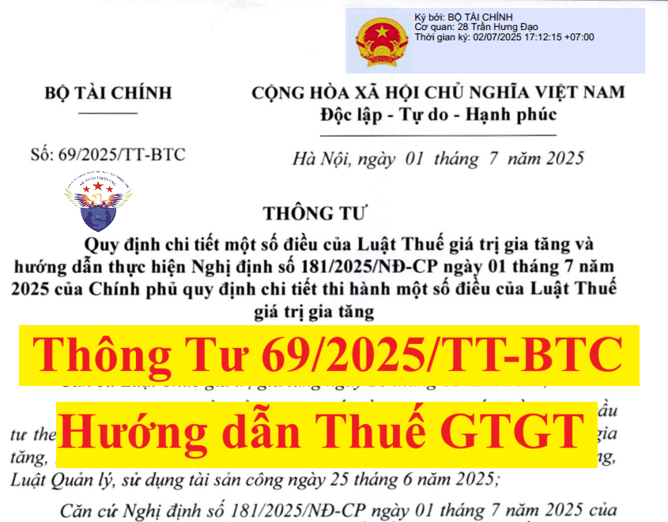

Ngày 01/7/2025, Bộ trưởng Bộ Tài chính ban hành Thông tư 69/2025/TT-BTC quy định chi tiết một số điều của Luật Thuế giá trị gia tăng 2024 và hướng dẫn thực hiện Nghị định 181/2025/NĐ-CP quy định chi tiết thi hành một số điều của Luật Thuế giá trị gia tăng.
Thông tư 69/2025/TT-BTC có hiệu lực từ ngày 1/7/2025, thay thế Thông tư số 219/2013/TT-BTC
Cụ thể nội dung của Thông tư 69/2025/TT-BTC như sau:
THÔNG TƯ
Căn cứ Luật Thuế giá trị gia tăng ngày 26 tháng 11 năm 2024;QUY ĐỊNH CHI TIẾT MỘT SỐ ĐIỀU CỦA LUẬT THUẾ GIÁ TRỊ GIA TĂNG VÀ HƯỚNG DẪN THỰC HIỆN NGHỊ ĐỊNH SỐ 181/2025/NĐ-CP NGÀY 01 THÁNG 07 NĂM 2025 CỦA CHÍNH PHỦ QUY ĐỊNH CHI TIẾT THI HÀNH MỘT SỐ ĐIỀU CỦA LUẬT THUẾ GIÁ TRỊ GIA TĂNG Căn cứ Luật sửa đổi, bổ sung một số điều của Luật Đấu thầu; Luật Đầu tư theo phương thức đối tác công tư; Luật Hải quan; Luật Thuế giá trị gia tăng; Luật Thuế xuất khẩu, thuế nhập khẩu; Luật Đầu tư; Luật Đầu tư công; Luật Quản lý, sử dụng tài sản công ngày 25 tháng 6 năm 2025; Căn cứ Nghị định số 181/2025/NĐ-CP ngày 01 tháng 07 năm 2025 của Chính phủ quy định chi tiết thi hành một số điều của Luật Thuế giá trị gia tăng; Căn cứ Nghị định số 29/2025/NĐ-CP ngày 24 tháng 02 năm 2025 của Chính phủ quy định chức năng, nhiệm vụ, quyền hạn và cơ cấu tổ chức của Bộ Tài chính; Theo đề nghị của Cục trưởng Cục Quản lý, giám sát chính sách thuế, phí và lệ phí; Bộ trưởng Bộ Tài chính ban hành Thông tư quy định chi tiết một số điều của Luật Thuế giá trị gia tăng và hướng dẫn thực hiện Nghị định số 181/2025/NĐ-CP ngày 01 tháng 07 năm 2025 của Chính phủ quy định chi tiết thi hành một số điều của Luật Thuế giá trị gia tăng. Điều 1. Phạm vi điều chỉnh Thông tư này quy định chi tiết về hồ sơ, thủ tục xác định đối tượng không chịu thuế giá trị gia tăng tại Điều 5, hồ sơ, thủ tục áp dụng thuế suất thuế giá trị gia tăng 0% tại khoản 1 Điều 9, nhóm hàng hóa, dịch vụ thuộc đối tượng áp dụng theo tỷ lệ % tại điểm b khoản 2 Điều 12, chứng từ nộp thuế giá trị gia tăng thay cho phía nước ngoài tại điểm a khoản 2 Điều 14 của Luật Thuế giá trị gia tăng; cách xác định số thuế giá trị gia tăng được hoàn đối với hàng hóa, dịch vụ xuất khẩu tại khoản 2 Điều 29, cách xác định số thuế giá trị gia tăng được hoàn đối với hoạt động sản xuất hàng hóa, cung cấp dịch vụ chịu thuế suất thuế giá trị gia tăng 5% tại Điều 31, thuế giá trị gia tăng áp dụng đối với tổ chức, cá nhân nước ngoài kinh doanh tại Việt Nam tại Điều 13, khoản 1, khoản 2 Điều 40 Nghị định số 181/2025/NĐ-CP ngày 01 tháng 07 năm 2025 của Chính phủ quy định chi tiết thi hành một số điều của Luật Thuế giá trị gia tăng. Điều 2. Đối tượng áp dụng Đối tượng áp dụng của Thông tư này bao gồm: 1. Người nộp thuế quy định tại Điều 3 Nghị định số 181/2025/NĐ-CP ngày 01 tháng 07 năm 2025 của Chính phủ quy định chi tiết thi hành một số điều của Luật Thuế giá trị gia tăng. 2. Cơ quan quản lý thuế theo quy định của pháp luật về quản lý thuế. 3. Các tổ chức, cá nhân khác có liên quan. Điều 3. Hồ sơ, thủ tục xác định đối tượng không chịu thuế giá trị gia tăng quy định tại Điều 5 Luật Thuế giá trị gia tăng 1. Người nộp thuế căn cứ hàng hóa, dịch vụ quy định tại Điều 5 Luật Thuế giá trị gia tăng và Điều 4 Nghị định số 181/2025/NĐ-CP ngày 01 tháng 07 năm 2025 của Chính phủ quy định chi tiết thi hành một số điều của Luật Thuế giá trị gia tăng để xác định đối tượng không chịu thuế giá trị gia tăng. 2. Một số trường hợp ngoài việc thực hiện theo quy định tại khoản 1 Điều này, khi cơ quan quản lý nhà nước yêu cầu thì người nộp thuế phải xuất trình hồ sơ, thủ tục sau: a) Đối với sản phẩm giống vật nuôi quy định tại khoản 2 Điều 5 Luật Thuế giá trị gia tăng, người nộp thuế phải có bản công bố tiêu chuẩn áp dụng của cơ sở sản xuất và hồ sơ giống theo quy định của pháp luật về chăn nuôi. Trường hợp nhập khẩu sản phẩm giống vật nuôi, người nộp thuế phải có văn bản xác nhận về nguồn gốc, xuất xứ, chất lượng giống, mục đích sử dụng để nhân giống, tạo giống của cơ quan có thẩm quyền hoặc tổ chức được cơ quan có thẩm quyền của nước xuất khẩu ủy quyền theo quy định của pháp luật về chăn nuôi. b) Đối với nhập khẩu báo, tạp chí, bản tin, đặc san, sách chính trị, sách giáo khoa, giáo trình, sách văn bản pháp luật, sách khoa học - kỹ thuật, sách phục vụ thông tin đối ngoại, sách in bằng chữ dân tộc thiểu số và tranh, ảnh, áp phích tuyên truyền cổ động, kể cả dưới dạng băng hoặc đĩa ghi tiếng, ghi hình, dữ liệu điện tử quy định tại khoản 15 Điều 5 Luật Thuế giá trị gia tăng, người nộp thuế phải có Giấy xác nhận nhập khẩu xuất bản phẩm để kinh doanh của cơ quan có thẩm quyền theo quy định của pháp luật về xuất bản. c) Đối với hàng hóa, dịch vụ bán cho tổ chức, cá nhân nước ngoài, tổ chức quốc tế để viện trợ nhân đạo, viện trợ không hoàn lại cho Việt Nam quy định tại khoản 19 Điều 5 Luật Thuế giá trị gia tăng, người nộp thuế phải có văn bản của tổ chức, cá nhân nước ngoài, tổ chức quốc tế theo quy định tại điểm b khoản 11 Điều 4 Nghị định số 181/2025/NĐ-CP ngày 01 tháng 07 năm 2025 của Chính phủ quy định chi tiết thi hành một số điều của Luật Thuế giá trị gia tăng. d) Đối với chuyển nhượng quyền sở hữu công nghiệp đối với sáng chế, kiểu dáng công nghiệp, thiết kế bố trí, nhãn hiệu là chuyển nhượng quyền sở hữu trí tuệ quy định tại khoản 21 Điều 5 Luật Thuế giá trị gia tăng, người nộp thuế phải có quyết định cấp văn bằng bảo hộ của cơ quan nhà nước có thẩm quyền theo quy định của pháp luật về sở hữu trí tuệ hoặc công nhận đăng ký quốc tế theo điều ước quốc tế mà nước Cộng hòa xã hội chủ nghĩa Việt Nam là thành viên và hợp đồng chuyển nhượng quyền sở hữu công nghiệp theo quy định của pháp luật. đ) Đối với chuyển nhượng quyền đối với giống cây trồng là chuyển nhượng quyền sở hữu trí tuệ quy định tại khoản 21 Điều 5 Luật Thuế giá trị gia tăng, người nộp thuế phải có quyết định cấp Bằng bảo hộ giống cây trồng của cơ quan nhà nước có thẩm quyền theo quy định của pháp luật về sở hữu trí tuệ và hợp đồng chuyển nhượng quyền đối với giống cây trồng theo quy định của pháp luật. e) Đối với hàng hóa nhập khẩu ủng hộ, tài trợ cho phòng, chống, khắc phục hậu quả thảm họa, thiên tai, dịch bệnh, chiến tranh quy định tại điểm d khoản 26 Điều 5 Luật Thuế giá trị gia tăng, người nộp thuế phải có văn bản phê duyệt tiếp nhận hàng hóa ủng hộ, tài trợ của các cơ quan, tổ chức tiếp nhận. Điều 4. Hồ sơ, thủ tục áp dụng thuế suất thuế giá trị gia tăng 0% đối với hàng hóa, dịch vụ quy định tại khoản 1 Điều 9 Luật Thuế giá trị gia tăng 1. Người nộp thuế căn cứ hàng hóa, dịch vụ quy định tại khoản 1 Điều 9 Luật Thuế giá trị gia tăng và Điều 17 Nghị định số 181/2025/NĐ-CP ngày 01 tháng 07 năm 2025 của Chính phủ quy định chi tiết thi hành một số điều của Luật Thuế giá trị gia tăng để xác định đối tượng áp dụng thuế suất thuế giá trị gia tăng 0%. 2. Khi cơ quan quản lý nhà nước yêu cầu thì người nộp thuế phải xuất trình hồ sơ, thủ tục đảm bảo đáp ứng quy định về điều kiện áp dụng thuế suất 0% quy định tại Điều 18 Nghị định số 181/2025/NĐ-CP ngày 01 tháng 07 năm 2025 của Chính phủ quy định chi tiết thi hành một số điều của Luật Thuế giá trị gia tăng. Đối với trường hợp xuất khẩu hàng hóa qua sàn thương mại điện tử ở nước ngoài và một số trường hợp đặc thù khác, khi cơ quan quản lý nhà nước yêu cầu thì người nộp thuế phải xuất trình hồ sơ, thủ tục đảm bảo đáp ứng quy định về điều kiện khấu trừ thuế giá trị gia tăng đầu vào quy định tại Điều 27, Điều 28 Nghị định số 181/2025/NĐ-CP ngày 01 tháng 07 năm 2025 của Chính phủ quy định chi tiết thi hành một số điều của Luật Thuế giá trị gia tăng. Điều 5. Nhóm hàng hóa, dịch vụ thuộc đối tượng áp dụng theo tỷ lệ % để tính thuế giá trị gia tăng quy định tại điểm b khoản 2 Điều 12 Luật Thuế giá trị gia tăng 1. Nhóm hàng hóa, dịch vụ thuộc đối tượng áp dụng theo tỷ lệ % để tính thuế giá trị gia tăng quy định tại điểm b khoản 2 Điều 12 Luật Thuế giá trị gia tăng được quy định tại Phụ lục I ban hành kèm theo Thông tư này. 2. Cơ sở kinh doanh nhiều loại hàng hóa, dịch vụ thuộc đối tượng áp dụng theo các mức tỷ lệ % khác nhau phải khai thuế giá trị gia tăng theo từng mức tỷ lệ % quy định đối với từng loại hàng hóa, dịch vụ; trường hợp cơ sở kinh doanh không xác định doanh thu tính thuế giá trị gia tăng theo từng mức tỷ lệ % tương ứng thì phải áp dụng theo mức tỷ lệ % cao nhất của hàng hóa, dịch vụ mà cơ sở sản xuất, kinh doanh trên toàn bộ doanh thu tính thuế của kỳ tính thuế đó. Điều 6. Chứng từ nộp thuế giá trị gia tăng thay cho phía nước ngoài quy định tại điểm a khoản 2 Điều 14 Luật Thuế giá trị gia tăng Tổ chức tại Việt Nam nộp thay nghĩa vụ thuế phải nộp của tổ chức nước ngoài không có cơ sở thường trú tại Việt Nam, cá nhân ở nước ngoài là đối tượng không cư trú tại Việt Nam, nhà cung cấp nước ngoài không có cơ sở thường trú tại Việt Nam phải có chứng từ nộp thuế giá trị gia tăng thay cho phía nước ngoài để khấu trừ thuế giá trị gia tăng đầu vào. Chứng từ nộp thuế giá trị gia tăng thay cho phía nước ngoài là chứng từ nộp ngân sách nhà nước theo quy định của pháp luật. Điều 7. Cách xác định số thuế giá trị gia tăng được hoàn đối với hàng hóa, dịch vụ xuất khẩu quy định tại Điều 29 Nghị định số 181/2025/NĐ-CP ngày 01 tháng 07 năm 2025 của Chính phủ quy định chi tiết thi hành một số điều của Luật Thuế giá trị gia tăng Cách xác định số thuế giá trị gia tăng được hoàn đối với hàng hóa, dịch vụ xuất khẩu thực hiện theo quy định tại Phụ lục 2 ban hành kèm theo Thông tư này. Điều 8. Cách xác định số thuế giá trị gia tăng được hoàn đối với hoạt động sản xuất hàng hóa, cung cấp dịch vụ chịu thuế suất thuế giá trị gia tăng 5% quy định tại Điều 31 Nghị định số 181/2025/NĐ-CP ngày 01 tháng 07 năm 2025 của Chính phủ quy định chi tiết thi hành một số điều của Luật Thuế giá trị gia tăng Cách xác định số thuế giá trị gia tăng được hoàn đối với hoạt động sản xuất hàng hóa, cung cấp dịch vụ chịu thuế suất thuế giá trị gia tăng 5% thực hiện theo quy định tại Phụ lục 3 ban hành kèm theo Thông tư này. Điều 9. Thuế giá trị gia tăng áp dụng đối với tổ chức, cá nhân nước ngoài kinh doanh tại Việt Nam 1. Thuế giá trị gia tăng áp dụng đối với tổ chức, cá nhân nước ngoài kinh doanh tại Việt Nam quy định tại Điều này áp dụng đối với: a) Tổ chức nước ngoài kinh doanh có cơ sở thường trú tại Việt Nam hoặc không có cơ sở thường trú tại Việt Nam; cá nhân nước ngoài kinh doanh là đối tượng cư trú tại Việt Nam hoặc không là đối tượng cư trú tại Việt Nam (sau đây gọi chung là Nhà thầu nước ngoài, Nhà thầu phụ nước ngoài) kinh doanh tại Việt Nam. b) Tổ chức, cá nhân nước ngoài thực hiện một phần hoặc toàn bộ hoạt động kinh doanh phân phối hàng hóa, cung cấp dịch vụ tại Việt Nam trong đó tổ chức, cá nhân nước ngoài vẫn là chủ sở hữu đối với hàng hóa giao cho tổ chức, cá nhân Việt Nam hoặc chịu trách nhiệm về chi phí phân phối, quảng cáo, tiếp thị, chất lượng dịch vụ, chất lượng hàng hóa giao cho tổ chức, cá nhân Việt Nam hoặc ấn định giá bán hàng hóa hoặc giá cung ứng dịch vụ; bao gồm cả trường hợp ủy quyền hoặc thuê tổ chức, cá nhân Việt Nam thực hiện một phần dịch vụ phân phối, dịch vụ khác liên quan đến việc bán hàng hóa tại Việt Nam. c) Tổ chức, cá nhân nước ngoài thông qua tổ chức, cá nhân Việt Nam để thực hiện việc đàm phán, ký kết các hợp đồng đứng tên tổ chức, cá nhân nước ngoài. d) Tổ chức, cá nhân nước ngoài thực hiện quyền xuất khẩu, quyền nhập khẩu, phân phối tại thị trường Việt Nam, mua hàng hóa để xuất khẩu, bán hàng hóa cho thương nhân Việt Nam theo pháp luật về thương mại. 2. Thuế giá trị gia tăng áp dụng đối với tổ chức, cá nhân nước ngoài kinh doanh tại Việt Nam quy định tại Điều này không áp dụng đối với: a) Tổ chức được thành lập theo quy định của pháp luật Việt Nam. b) Tổ chức, cá nhân nước ngoài thực hiện cung cấp hàng hóa cho tổ chức, cá nhân Việt Nam không kèm theo các dịch vụ được thực hiện tại Việt Nam dưới hình thức giao hàng tại cửa khẩu nước ngoài: người bán chịu mọi trách nhiệm, chi phí, rủi ro liên quan đến việc xuất khẩu hàng và giao hàng tại cửa khẩu nước ngoài; người mua chịu mọi trách nhiệm, chi phí, rủi ro liên quan đến việc nhận hàng, chuyên chở hàng từ cửa khẩu nước ngoài về đến Việt Nam (kể cả trường hợp giao hàng tại cửa khẩu nước ngoài có kèm điều khoản bảo hành là trách nhiệm và nghĩa vụ của người bán). c) Tổ chức, cá nhân nước ngoài thực hiện cung cấp hàng hóa cho tổ chức, cá nhân Việt Nam không kèm theo các dịch vụ được thực hiện tại Việt Nam dưới hình thức giao hàng tại cửa khẩu Việt Nam: người bán chịu mọi trách nhiệm, chi phí, rủi ro liên quan đến hàng hóa cho đến điểm giao hàng tại cửa khẩu Việt Nam; người mua chịu mọi trách nhiệm, chi phí, rủi ro liên quan đến việc nhận hàng, chuyên chở hàng từ cửa khẩu Việt Nam (kể cả trường hợp giao hàng tại cửa khẩu Việt Nam có kèm điều khoản bảo hành là trách nhiệm và nghĩa vụ của người bán). d) Tổ chức, cá nhân nước ngoài thực hiện cung cấp dịch vụ sửa chữa (có bao gồm hoặc không bao gồm vật tư, thiết bị thay thế kèm theo) phương tiện vận tải, máy móc, thiết bị (kể cả đường cáp biển, thiết bị truyền dẫn) cho tổ chức, cá nhân Việt Nam mà các dịch vụ này được thực hiện ở nước ngoài. đ) Tổ chức, cá nhân nước ngoài thực hiện cung cấp dịch vụ quảng cáo, tiếp thị (trừ quảng cáo, tiếp thị trên internet) cho tổ chức, cá nhân Việt Nam mà các dịch vụ này được thực hiện ở nước ngoài. e) Tổ chức, cá nhân nước ngoài thực hiện cung cấp dịch vụ xúc tiến đầu tư và thương mại cho tổ chức, cá nhân Việt Nam mà các dịch vụ này được thực hiện ở nước ngoài. g) Tổ chức, cá nhân nước ngoài thực hiện cung cấp dịch vụ môi giới bán hàng hóa, môi giới cung cấp dịch vụ ra nước ngoài cho tổ chức, cá nhân Việt Nam mà các dịch vụ này được thực hiện ở nước ngoài. h) Tổ chức, cá nhân nước ngoài thực hiện cung cấp dịch vụ đào tạo (trừ đào tạo trực tuyến) cho tổ chức, cá nhân Việt Nam mà các dịch vụ này được thực hiện ở nước ngoài. i) Tổ chức, cá nhân nước ngoài thực hiện cung cấp dịch vụ chia cước (cước thanh toán) dịch vụ, viễn thông quốc tế giữa Việt Nam với nước ngoài; dịch vụ thuê đường truyền dẫn và băng tần vệ tinh của nước ngoài theo quy định của Luật Viễn thông; dịch vụ chia cước (cước thanh toán) dịch vụ bưu chính quốc tế giữa Việt Nam với nước ngoài theo quy định của Luật Bưu chính, các điều ước quốc tế về Bưu chính mà nước Cộng hòa xã hội chủ nghĩa Việt Nam tham gia ký kết cho tổ chức, cá nhân Việt Nam mà các dịch vụ này được thực hiện ở nước ngoài. k) Tổ chức, cá nhân nước ngoài sử dụng kho ngoại quan, cảng nội địa (ICD) làm kho hàng hóa để phụ trợ cho hoạt động vận tải quốc tế, quá cảnh, chuyển khẩu, lưu trữ hàng hoặc để cho doanh nghiệp khác gia công. l) Tổ chức, cá nhân nước ngoài thực hiện cung cấp hàng hóa, dịch vụ khác cho tổ chức, cá nhân Việt Nam mà việc cung cấp các hàng hóa, dịch vụ này được thực hiện ở nước ngoài và không tiêu dùng tại Việt Nam. 3. Hàng hóa, dịch vụ chịu thuế giá trị gia tăng áp dụng đối với tổ chức, cá nhân nước ngoài kinh doanh tại Việt Nam: a) Dịch vụ hoặc dịch vụ gắn với hàng hóa thuộc đối tượng chịu thuế giá trị gia tăng do Nhà thầu nước ngoài, Nhà thầu phụ nước ngoài cung cấp trên cơ sở hợp đồng nhà thầu, hợp đồng nhà thầu phụ sử dụng cho sản xuất, kinh doanh và tiêu dùng tại Việt Nam (trừ các trường hợp quy định tại khoản 2 Điều này) mà các dịch vụ này được cung cấp tại Việt Nam và tiêu dùng tại Việt Nam. b) Dịch vụ hoặc dịch vụ gắn với hàng hóa thuộc đối tượng chịu thuế giá trị gia tăng do Nhà thầu nước ngoài, Nhà thầu phụ nước ngoài cung cấp trên cơ sở hợp đồng nhà thầu, hợp đồng nhà thầu phụ sử dụng cho sản xuất, kinh doanh và tiêu dùng tại Việt Nam (trừ các trường hợp quy định tại khoản 2 Điều này) mà các dịch vụ này được cung cấp ngoài Việt Nam và tiêu dùng tại Việt Nam. c) Trường hợp hàng hóa được cung cấp theo hợp đồng dưới hình thức: điểm giao nhận hàng hóa nằm trong lãnh thổ Việt Nam (trừ trường hợp quy định tại điểm k khoản 2 Điều này) hoặc việc cung cấp hàng hóa có kèm theo dịch vụ tiến hành tại Việt Nam như lắp đặt, chạy thử, bảo hành, bảo dưỡng, thay thế, các dịch vụ khác đi kèm với việc cung cấp hàng hóa (bao gồm cả trường hợp dịch vụ kèm theo miễn phí), kể cả trường hợp việc cung cấp các dịch vụ nêu trên có hoặc không nằm trong giá trị của hợp đồng cung cấp hàng hóa thì giá trị hàng hóa chỉ phải chịu thuế giá trị gia tăng khâu nhập khẩu theo quy định, phần giá trị dịch vụ thuộc đối tượng chịu thuế giá trị gia tăng theo quy định tại Thông tư này. Trường hợp hợp đồng không tách riêng được giá trị hàng hóa và giá trị dịch vụ đi kèm (bao gồm cả trường hợp dịch vụ kèm theo miễn phí) thì thuế giá trị gia tăng được tính chung cho cả hợp đồng. 4. Cách xác định số thuế giá trị gia tăng phải nộp: a) Số thuế giá trị gia tăng phải nộp theo phương pháp tính trực tiếp theo doanh thu được xác định căn cứ theo giá tính thuế và tỷ lệ %. Trong đó, giá tính thuế giá trị gia tăng là toàn bộ doanh thu do cung cấp dịch vụ, dịch vụ gắn với hàng hóa thuộc đối tượng chịu thuế giá trị gia tăng mà Nhà thầu nước ngoài, Nhà thầu phụ nước ngoài nhận được, chưa trừ các khoản thuế phải nộp, kể cả các khoản chi phí do Bên Việt Nam trả thay Nhà thầu nước ngoài, Nhà thầu phụ nước ngoài (nếu có) theo quy định tại Điều 13 Nghị định số 181/2025/NĐ-CP ngày 01 tháng 07 năm 2025 của Chính phủ quy định chi tiết thi hành một số điều của Luật Thuế giá trị gia tăng. b) Số thuế giá trị gia tăng phải nộp theo phương pháp tính trực tiếp theo doanh thu bằng doanh thu tính thuế giá trị gia tăng nhân với tỷ lệ % để tính thuế giá trị gia tăng trên doanh thu. c) Nhà thầu nước ngoài, Nhà thầu phụ nước ngoài thuộc đối tượng nộp thuế giá trị gia tăng theo phương pháp tính trực tiếp không được khấu trừ thuế giá trị gia tăng đối với hàng hóa, dịch vụ mua vào để thực hiện hợp đồng nhà thầu, hợp đồng nhà thầu phụ. 5. Doanh thu tính thuế giá trị gia tăng đối với một số trường hợp cụ thể được xác định như sau: a) Trường hợp theo thỏa thuận tại hợp đồng nhà thầu, hợp đồng nhà thầu phụ, doanh thu Nhà thầu nước ngoài, Nhà thầu phụ nước ngoài nhận được không bao gồm thuế giá trị gia tăng phải nộp thì doanh thu tính thuế giá trị gia tăng phải được quy đổi thành doanh thu có thuế giá trị gia tăng và được xác định theo công thức sau:
Trường hợp Nhà thầu nước ngoài ký hợp đồng với các nhà cung cấp tại Việt Nam để mua nguyên vật liệu, máy móc, thiết bị để thực hiện hợp đồng nhà thầu và hàng hóa, dịch vụ để phục vụ cho tiêu dùng nội bộ, tiêu dùng các khoản không thuộc hạng mục, công việc mà Nhà thầu nước ngoài thực hiện theo hợp đồng nhà thầu thì giá trị hàng hóa, dịch vụ này không được trừ khi xác định doanh thu tính thuế giá trị gia tăng của Nhà thầu nước ngoài. c) Trường hợp Nhà thầu nước ngoài ký hợp đồng với Nhà thầu phụ nước ngoài thực hiện nộp thuế theo phương pháp tính trực tiếp thì Bên Việt Nam khai nộp thuế giá trị gia tăng thay cho Nhà thầu nước ngoài, Nhà thầu phụ nước ngoài theo tỷ lệ % để tính thuế giá trị gia tăng trên doanh thu tương ứng với ngành kinh doanh mà Nhà thầu nước ngoài, Nhà thầu phụ nước ngoài đó thực hiện theo hợp đồng nhà thầu, hợp đồng nhà thầu phụ. Nhà thầu nước ngoài, Nhà thầu phụ nước ngoài không phải khai nộp thuế giá trị gia tăng trên phần giá trị công việc mà Bên Việt Nam đã khai nộp thay. d) Doanh thu tính thuế giá trị gia tăng đối với trường hợp cho thuê máy móc, thiết bị, phương tiện vận tải là toàn bộ tiền cho thuê. Trường hợp doanh thu cho thuê máy móc, thiết bị, phương tiện vận tải bao gồm các chi phí do bên cho thuê trực tiếp chi trả như bảo hiểm phương tiện, bảo dưỡng, chứng nhận đăng kiểm, người điều khiển phương tiện, máy móc và chi phí vận chuyển máy móc, thiết bị từ nước ngoài đến Việt Nam thì doanh thu tính thuế giá trị gia tăng không bao gồm các khoản chi phí này nếu có chứng từ thực tế chứng minh. đ) Đối với dịch vụ giao nhận, kho vận quốc tế từ Việt Nam đi nước ngoài (không phân biệt người gửi hay người nhận trả tiền dịch vụ), doanh thu tính thuế giá trị gia tăng là toàn bộ doanh thu Nhà thầu nước ngoài nhận được không bao gồm cước vận chuyển quốc tế phải trả cho hãng vận chuyển (hàng không, đường biển). e) Đối với dịch vụ chuyển phát quốc tế từ Việt Nam đi nước ngoài (không phân biệt người gửi hay người nhận trả tiền dịch vụ), doanh thu tính thuế giá trị gia tăng là toàn bộ doanh thu Nhà thầu nước ngoài nhận được. 6. Tỷ lệ % để tính thuế giá trị gia tăng trên doanh thu: a) Tỷ lệ % để tính thuế giá trị gia tăng trên doanh thu áp dụng đối với tổ chức, cá nhân nước ngoài kinh doanh tại Việt Nam (trừ dịch vụ cung cấp qua kênh thương mại điện tử và các nền tảng số) thực hiện theo quy định tại điểm b khoản 2 Điều 12 Luật Thuế giá trị gia tăng và Điều 5 Thông tư này. b) Đối với các hợp đồng nhà thầu, hợp đồng nhà thầu phụ bao gồm nhiều hoạt động kinh doanh khác nhau hoặc một phần giá trị hợp đồng không thuộc diện chịu thuế giá trị gia tăng, việc áp dụng tỷ lệ % để tính thuế giá trị gia tăng trên doanh thu khi xác định số thuế giá trị gia tăng phải nộp căn cứ vào doanh thu tính thuế giá trị gia tăng đối với từng hoạt động kinh doanh do Nhà thầu nước ngoài, Nhà thầu phụ nước ngoài thực hiện theo quy định tại hợp đồng nhà thầu, hợp đồng nhà thầu phụ. Trường hợp không tách riêng được giá trị từng hoạt động kinh doanh thì áp dụng tỷ lệ % để tính thuế giá trị gia tăng trên doanh thu cao nhất đối với ngành nghề kinh doanh cho toàn bộ giá trị hợp đồng. Riêng đối với hoạt động xây dựng, lắp đặt có bao thầu nguyên vật liệu hoặc máy móc, thiết bị đi kèm công trình xây dựng: Trường hợp hợp đồng nhà thầu tách riêng được giá trị từng hoạt động kinh doanh thì Nhà thầu nước ngoài không phải nộp thuế giá trị gia tăng trên giá trị nguyên vật liệu hoặc máy móc, thiết bị đã nộp thuế giá trị gia tăng ở khâu nhập khẩu hoặc thuộc diện không chịu thuế giá trị gia tăng; đối với từng phần giá trị công việc còn lại theo hợp đồng thì áp dụng tỷ lệ % để tính thuế giá trị gia tăng trên doanh thu tương ứng với hoạt động kinh doanh đó. Trường hợp hợp đồng nhà thầu không tách riêng được giá trị từng hoạt động kinh doanh thì áp dụng tỷ lệ % để tính thuế giá trị gia tăng trên doanh thu là 3% tính trên toàn bộ giá trị hợp đồng (bao gồm cả giá trị nguyên vật liệu hoặc máy móc, thiết bị nhập khẩu). Trường hợp Nhà thầu nước ngoài ký hợp đồng với các Nhà thầu phụ để giao lại toàn bộ các phần giá trị công việc hoặc hạng mục có bao thầu nguyên vật liệu hoặc máy móc, thiết bị, Nhà thầu nước ngoài chỉ thực hiện phần giá trị dịch vụ còn lại theo hợp đồng nhà thầu thì tỷ lệ % để tính thuế giá trị gia tăng được áp dụng đối với ngành nghề dịch vụ (5%). c) Đối với hợp đồng cung cấp máy móc, thiết bị có kèm theo các dịch vụ thực hiện tại Việt Nam, nếu tách riêng được giá trị máy móc, thiết bị và giá trị các dịch vụ khi xác định số thuế giá trị gia tăng phải nộp thì áp dụng tỷ lệ % để tính thuế giá trị gia tăng trên doanh thu của từng phần giá trị hợp đồng. Trường hợp trong hợp đồng không tách riêng được giá trị máy móc, thiết bị và giá trị các dịch vụ thì áp dụng tỷ lệ % để tính thuế giá trị gia tăng trên doanh thu tính thuế là 3%. 7. Thuế giá trị gia tăng đối với Nhà thầu nước ngoài, Nhà thầu phụ nước ngoài cung cấp hàng hóa, dịch vụ để tiến hành hoạt động tìm kiếm, thăm dò, phát triển và khai thác mỏ dầu, khí đốt: a) Trường hợp Nhà thầu nước ngoài, Nhà thầu phụ nước ngoài cung cấp hàng hóa, dịch vụ để tiến hành hoạt động tìm kiếm, thăm dò, phát triển và khai thác mỏ dầu, khí đốt nếu không đáp ứng được điều kiện áp dụng phương pháp khấu trừ thuế thì Bên Việt Nam có trách nhiệm khấu trừ, nộp thay thuế giá trị gia tăng trước khi thanh toán. Số thuế nộp thay tính bằng tổng số tiền thanh toán chưa bao gồm thuế giá trị gia tăng nhân (x) với mức thuế suất thuế giá trị gia tăng quy định đối với hàng hóa, dịch vụ do Nhà thầu nước ngoài cung cấp. b) Trường hợp Nhà thầu nước ngoài, Nhà thầu phụ nước ngoài cung cấp hàng hóa, dịch vụ để tiến hành hoạt động tìm kiếm, thăm dò, phát triển và khai thác mỏ dầu, khí đốt đáp ứng được điều kiện áp dụng phương pháp khấu trừ thuế hoặc đáp ứng điều kiện có cơ sở thường trú tại Việt Nam, hoặc là đối tượng cư trú tại Việt Nam, có thời hạn kinh doanh tại Việt Nam theo hợp đồng nhà thầu, hợp đồng nhà thầu phụ từ 183 ngày trở lên kể từ ngày hợp đồng nhà thầu, hợp đồng nhà thầu phụ có hiệu lực và tổ chức hạch toán kế toán theo quy định của pháp luật về kế toán và hướng dẫn của Bộ Tài chính thì thực hiện như sau: Trong thời gian Nhà thầu nước ngoài, Nhà thầu phụ nước ngoài chưa được cơ quan thuế cấp giấy chứng nhận đăng ký thuế để khai, nộp thuế giá trị gia tăng theo phương pháp khấu trừ thuế, nếu Bên Việt Nam thanh toán tiền cho Nhà thầu nước ngoài, Nhà thầu phụ nước ngoài thì Bên Việt Nam có trách nhiệm khấu trừ nộp thay thuế giá trị gia tăng trước khi thanh toán theo quy định tại điểm a khoản này. Khi Nhà thầu nước ngoài, Nhà thầu phụ nước ngoài được cơ quan thuế cấp giấy chứng nhận đăng ký thuế thì Nhà thầu nước ngoài, Nhà thầu phụ nước ngoài chuyển hóa đơn, chứng từ phát sinh trong kỳ khai thuế giá trị gia tăng cho Bên Việt Nam để Bên Việt Nam khai khấu trừ, nộp thay thuế giá trị gia tăng cho Nhà thầu nước ngoài, Nhà thầu phụ nước ngoài. Nhà thầu nước ngoài, Nhà thầu phụ nước ngoài không được khấu trừ thuế giá trị gia tăng đầu vào phát sinh trước khi được cấp giấy chứng nhận đăng ký thuế. 8. “Hợp đồng nhà thầu” quy định tại Thông tư này là hợp đồng, thỏa thuận hoặc cam kết giữa Nhà thầu nước ngoài và Bên Việt Nam. “Hợp đồng nhà thầu phụ” quy định tại Thông tư này là hợp đồng, thỏa thuận hoặc cam kết giữa Nhà thầu phụ và Nhà thầu nước ngoài, trong đó, Nhà thầu phụ gồm Nhà thầu phụ nước ngoài và Nhà thầu phụ Việt Nam. 9. Quy định về cơ sở thường trú và đối tượng cư trú tại Thông tư này thực hiện theo quy định của pháp luật về thuế thu nhập doanh nghiệp và pháp luật về thuế thu nhập cá nhân. Điều 10. Hiệu lực thi hành 1. Thông tư này có hiệu lực thi hành từ ngày 01 tháng 7 năm 2025. 2. Thông tư này thay thế: a) Thông tư số 219/2013/TT-BTC ngày 31 tháng 12 năm 2013 của Bộ trưởng Bộ Tài chính hướng dẫn thi hành Luật Thuế giá trị gia tăng và Nghị định số 209/2013/NĐ-CP ngày 18 tháng 12 năm 2013 của Chính phủ quy định chi tiết và hướng dẫn thi hành một số điều Luật Thuế giá trị gia tăng. b) Thông tư số 193/2015/TT-BTC ngày 24 tháng 11 năm 2015 của Bộ trưởng Bộ Tài chính sửa đổi, bổ sung Thông tư số 219/2013/TT-BTC ngày 31 tháng 12 năm 2013 của Bộ trưởng Bộ Tài chính hướng dẫn thi hành Luật Thuế giá trị gia tăng và Nghị định số 209/2013/NĐ-CP ngày 18 tháng 12 năm 2013 của Chính phủ quy định chi tiết và hướng dẫn thi hành một số điều Luật Thuế giá trị gia tăng. c) Thông tư số 173/2016/TT-BTC ngày 28 tháng 10 năm 2016 của Bộ trưởng Bộ Tài chính sửa đổi, bổ sung khổ thứ nhất khoản 3 Điều 15 Thông tư số 219/2013/TT-BTC ngày 31 tháng 12 năm 2013 của Bộ trưởng Bộ Tài chính (đã được sửa đổi, bổ sung theo Thông tư số 119/2014/TT-BTC ngày 25 tháng 8 năm 2014, Thông tư số 151/2014/TT-BTC ngày 10 tháng 10 năm 2014, Thông tư số 26/2015/TT-BTC ngày 27 tháng 02 năm 2015 của Bộ trưởng Bộ Tài chính). d) Thông tư số 82/2018/TT-BTC ngày 30 tháng 8 năm 2018 của Bộ trưởng Bộ Tài chính bãi bỏ nội dung ví dụ 37 quy định tại điểm a.4 khoản 10 Điều 7 Thông tư số 219/2013/TT-BTC ngày 31 tháng 12 năm 2013 của Bộ trưởng Bộ Tài chính hướng dẫn thi hành Luật Thuế giá trị gia tăng và Nghị định số 209/2013/NĐ-CP ngày 18 tháng 12 năm 2013 của Chính phủ quy định chi tiết và hướng dẫn thi hành một số điều của Luật Thuế giá trị gia tăng. đ) Thông tư số 43/2021/TT-BTC ngày 11 tháng 6 năm 2021 của Bộ trưởng Bộ Tài chính sửa đổi, bổ sung khoản 11 Điều 10 Thông tư số 219/2013/TT-BTC ngày 31 tháng 12 năm 2013 của Bộ trưởng Bộ Tài chính hướng dẫn thi hành Luật Thuế giá trị gia tăng và Nghị định số 209/2013/NĐ-CP ngày 18 tháng 12 năm 2013 của Chính phủ quy định chi tiết và hướng dẫn thi hành một số điều Luật Thuế giá trị gia tăng (đã được sửa đổi, bổ sung tại Thông tư số 26/2015/TT-BTC ngày 27 tháng 02 năm 2015 của Bộ trưởng Bộ Tài chính). e) Thông tư số 13/2023/TT-BTC ngày 28 tháng 02 năm 2023 của Bộ trưởng Bộ Tài chính hướng dẫn thi hành Nghị định số 49/2022/NĐ-CP ngày 29 tháng 7 năm 2022 của Chính phủ sửa đổi, bổ sung một số điều của Nghị định số 209/2013/NĐ-CP ngày 18 tháng 12 năm 2013 của Chính phủ quy định chi tiết và hướng dẫn thi hành một số điều của Luật Thuế giá trị gia tăng đã được sửa đổi, bổ sung một số điều theo Nghị định số 12/2015/NĐ-CP, Nghị định số 100/2016/NĐ-CP và Nghị định số 146/2017/NĐ-CP và sửa đổi bổ sung Thông tư số 80/2021/TT-BTC ngày 29 tháng 9 năm 2021 của Bộ trưởng Bộ Tài chính. 3. Bãi bỏ quy định tại: a) Chương 2 Thông tư số 09/2011/TT-BTC ngày 21 tháng 01 năm 2011 của Bộ trưởng Bộ Tài chính hướng dẫn về thuế giá trị gia tăng, thuế thu nhập doanh nghiệp đối với lĩnh vực kinh doanh bảo hiểm. b) Điều 3 Thông tư số 128/2011/TT-BTC ngày 12 tháng 9 năm 2011 của Bộ trưởng Bộ Tài chính hướng dẫn về thuế giá trị gia tăng và thuế thu nhập doanh nghiệp đối với cơ sở y tế công lập. c) Điều 6, Điều 9, Điều 12 và Điều 15 Thông tư số 103/2014/TT-BTC ngày 06 tháng 8 năm 2014 của Bộ trưởng Bộ Tài chính hướng dẫn thực hiện nghĩa vụ thuế áp dụng đối với tổ chức, cá nhân nước ngoài kinh doanh tại Việt Nam hoặc có thu nhập phát sinh tại Việt Nam. d) Điều 3 Thông tư số 119/2014/TT-BTC ngày 25 tháng 8 năm 2014 của Bộ trưởng Bộ Tài chính sửa đổi, bổ sung một số điều của Thông tư số 156/2013/TT-BTC ngày 06 tháng 11 năm 2013, Thông tư số 111/2013/TT-BTC ngày 15 tháng 8 năm 2013, Thông tư số 219/2013/TT-BTC ngày 31 tháng 12 năm 2013, Thông tư số 08/2013/TT-BTC ngày 10 tháng 01 năm 2013, Thông tư số 85/2011/TT-BTC ngày 17 tháng 6 năm 2011, Thông tư số 39/2014/TT-BTC ngày 31 tháng 3 năm 2014 và Thông tư số 78/2014/TT-BTC ngày 18 tháng 6 năm 2014 của Bộ trưởng Bộ Tài chính để cải cách, đơn giản các thủ tục hành chính về thuế. đ) Chương II Thông tư số 151/2014/TT-BTC ngày 10 tháng 10 năm 2014 của Bộ trưởng Bộ Tài chính hướng dẫn thi hành Nghị định số 91/2014/NĐ-CP ngày 01 tháng 10 năm 2014 của Chính phủ về việc sửa đổi, bổ sung một số điều tại các Nghị định quy định về thuế. e) Điều 1 Thông tư số 26/2015/TT-BTC ngày 27 tháng 02 năm 2015 của Bộ trưởng Bộ Tài chính hướng dẫn về thuế giá trị gia tăng và quản lý thuế tại Nghị định số 12/2015/NĐ-CP ngày 12 tháng 2 năm 2015 của Chính phủ quy định chi tiết thi hành Luật sửa đổi, bổ sung một số điều của các Luật về thuế và sửa đổi, bổ sung một số điều của các Nghị định về thuế và sửa đổi, bổ sung một số điều của Thông tư số 39/2014/TT-BTC ngày 31 tháng 3 năm 2014 của Bộ trưởng Bộ Tài chính về hóa đơn bán hàng hóa, cung ứng dịch vụ. g) Điều 1 Thông tư số 130/2016/TT-BTC ngày 12 tháng 8 năm 2016 của Bộ trưởng Bộ Tài chính hướng dẫn Nghị định số 100/2016/NĐ-CP ngày 01 tháng 7 năm 2016 của Chính phủ quy định chi tiết thi hành Luật sửa đổi, bổ sung một số điều của Luật Thuế giá trị gia tăng, Luật Thuế tiêu thụ đặc biệt và Luật Quản lý thuế và sửa đổi một số điều tại các Thông tư về thuế. h) Điều 1 Thông tư số 93/2017/TT-BTC ngày 19 tháng 9 năm 2017 của Bộ trưởng Bộ Tài chính sửa đổi, bổ sung khoản 3, khoản 4 Điều 12 Thông tư số 219/2013/TT-BTC ngày 31 tháng 12 năm 2013 (đã được sửa đổi, bổ sung tại Thông tư số 119/2014/TT-BTC ngày 25 tháng 8 năm 2014) và bãi bỏ khoản 7 Điều 11 Thông tư số 156/2013/TT-BTC ngày 06 tháng 11 năm 2013 của Bộ trưởng Bộ Tài chính. i) Điều 1, Điều 2 Thông tư số 25/2018/TT-BTC ngày 16 tháng 3 năm 2018 của Bộ trưởng Bộ Tài chính hướng dẫn Nghị định số 146/2017/NĐ-CP ngày 15 tháng 12 năm 2017 của Chính phủ và sửa đổi, bổ sung một số điều của Thông tư số 78/2014/TT-BTC ngày 18 tháng 6 năm 2014 của Bộ trưởng Bộ Tài chính, Thông tư số 111/2013/TT-BTC ngày 15 tháng 8 năm 2013 của Bộ trưởng Bộ Tài chính. 4. Trong quá trình thực hiện, nếu có khó khăn, vướng mắc, đề nghị các đơn vị, cơ sở kinh doanh phản ánh kịp thời về Bộ Tài chính để được giải quyết./.
PHỤ LỤC I
NHÓM HÀNG HÓA, DỊCH VỤ THUỘC ĐỐI TƯỢNG ÁP DỤNG THEO TỶ LỆ % ĐỂ TÍNH THUẾ GIÁ TRỊ GIA TĂNG (Kèm theo Thông tư số 69/2025/TT-BTC ngày 01 tháng 7 năm 2025 của Bộ trưởng Bộ Tài chính)
PHỤ LỤC II CÁCH XÁC ĐỊNH SỐ THUẾ ĐƯỢC HOÀN ĐỐI VỚI HÀNG HÓA, DỊCH VỤ XUẤT KHẨU Cách xác định số thuế giá trị gia tăng được hoàn đối với hàng hóa, dịch vụ xuất khẩu đối với trường hợp cơ sở kinh doanh trong tháng, quý vừa có hàng hóa, dịch vụ xuất khẩu, vừa có hàng hóa, dịch vụ tiêu thụ nội địa như sau:
Chênh lệch điều chỉnh tăng, giảm số thuế giá trị gia tăng đầu vào được khấu trừ sử dụng cho sản xuất, kinh doanh hàng hóa, dịch vụ xuất khẩu hạch toán riêng được của các kỳ tính thuế trước kỳ hoàn thuế (4) = Điều chỉnh tăng số thuế giá trị gia tăng đầu vào được khấu trừ sử dụng cho sản xuất, kinh doanh hàng hóa, dịch vụ xuất khẩu hạch toán riêng được của các kỳ tính thuế trước kỳ hoàn thuế trừ (-) Điều chỉnh giảm số thuế giá trị gia tăng đầu vào được khấu trừ sử dụng cho sản xuất, kinh doanh hàng hóa, dịch vụ xuất khẩu hạch toán riêng được của các kỳ tính thuế trước kỳ hoàn thuế. Chênh lệch điều chỉnh tăng, giảm số thuế giá trị gia tăng đầu vào được khấu trừ sử dụng đồng thời cho hoạt động sản xuất, kinh doanh hàng hóa, dịch vụ xuất khẩu và tiêu thụ nội địa không hạch toán riêng được của các kỳ tính thuế trước kỳ hoàn thuế (5) = Điều chỉnh tăng số thuế giá trị gia tăng đầu vào được khấu trừ sử dụng đồng thời cho hoạt động sản xuất, kinh doanh hàng hóa, dịch vụ xuất khẩu và tiêu thụ nội địa không hạch toán riêng được của các kỳ tính thuế trước kỳ hoàn thuế trừ (-) Điều chỉnh giảm số thuế giá trị gia tăng đầu vào được khấu trừ sử dụng đồng thời cho hoạt động sản xuất, kinh doanh hàng hóa, dịch vụ xuất khẩu và tiêu thụ nội địa không hạch toán riêng được của các kỳ tính thuế trước kỳ hoàn thuế. Nếu số thuế giá trị gia tăng đầu vào được khấu trừ sử dụng cho sản xuất, kinh doanh hàng hóa, dịch vụ xuất khẩu của kỳ hoàn thuế (1) nêu trên sau khi bù trừ với số thuế giá trị gia tăng phải nộp của hàng hóa, dịch vụ tiêu thụ nội địa còn lại từ 300 triệu đồng trở lên thì cơ sở kinh doanh được hoàn thuế cho hàng hóa, dịch vụ xuất khẩu. Số thuế giá trị gia tăng được hoàn của hàng hóa, dịch vụ xuất khẩu không vượt quá 10% doanh thu của hàng hóa, dịch vụ xuất khẩu (trừ doanh thu của hàng hóa nhập khẩu sau đó xuất khẩu sang nước khác) của kỳ hoàn thuế. PHỤ LỤC III CÁCH XÁC ĐỊNH SỐ THUẾ ĐƯỢC HOÀN ĐỐI VỚI HOẠT ĐỘNG SẢN XUẤT HÀNG HÓA, CUNG CẤP DỊCH VỤ CHỊU THUẾ SUẤT THUẾ GIÁ TRỊ GIA TĂNG 5% (Kèm theo Thông tư số 69/2025/TT-BTC ngày 01 tháng 7 năm 2025 của Bộ trưởng Bộ Tài chính) Cách xác định số thuế giá trị gia tăng được hoàn đối với hoạt động sản xuất hàng hóa, cung cấp dịch vụ chịu thuế suất thuế giá trị gia tăng 5% như sau:
Chênh lệch điều chỉnh tăng, giảm số thuế giá trị gia tăng đầu vào được khấu trừ của các kỳ tính thuế trước kỳ hoàn thuế sử dụng cho sản xuất hàng hóa, cung cấp dịch vụ chịu thuế suất thuế giá trị gia tăng 5% hạch toán riêng được (4) = Điều chỉnh tăng số thuế giá trị gia tăng đầu vào được khấu trừ sử dụng cho sản xuất hàng hóa, cung cấp dịch vụ chịu thuế suất thuế giá trị gia tăng 5% hạch toán riêng được của các kỳ tính thuế trước kỳ hoàn thuế trừ (-) Điều chỉnh giảm số thuế giá trị gia tăng đầu vào được khấu trừ sử dụng cho sản xuất hàng hóa, cung cấp dịch vụ chịu thuế suất thuế giá trị gia tăng 5% hạch toán riêng được của các kỳ tính thuế trước kỳ hoàn thuế. Chênh lệch điều chỉnh tăng, giảm số thuế giá trị gia tăng đầu vào được khấu trừ sử dụng đồng thời cho sản xuất hàng hóa, cung cấp dịch vụ chịu thuế suất thuế giá trị gia tăng 5% và sử dụng cho sản xuất, kinh doanh hàng hóa, dịch vụ chịu nhiều mức thuế suất khác (bao gồm hàng hóa, dịch vụ chịu thuế suất thuế giá trị gia tăng 5% hoạt động kinh doanh thương mại) không hạch toán riêng được của các kỳ tính thuế trước kỳ hoàn thuế (5) = Điều chỉnh tăng số thuế giá trị gia tăng đầu vào được khấu trừ sử dụng đồng thời cho sản xuất hàng hóa, cung cấp dịch vụ chịu thuế suất thuế giá trị gia tăng 5% và sử dụng cho sản xuất, kinh doanh hàng hóa, dịch vụ chịu nhiều mức thuế suất khác (bao gồm hàng hóa, dịch vụ chịu thuế suất thuế giá trị gia tăng 5% hoạt động kinh doanh thương mại) không hạch toán riêng được của các kỳ tính thuế trước kỳ hoàn thuế trừ (-) Điều chỉnh giảm số thuế giá trị gia tăng đầu vào được khấu trừ sử dụng đồng thời cho sản xuất hàng hóa, cung cấp dịch vụ chịu thuế suất thuế giá trị gia tăng 5% và sử dụng cho sản xuất, kinh doanh hàng hóa, dịch vụ chịu nhiều mức thuế suất khác (bao gồm hàng hóa, dịch vụ chịu thuế suất thuế giá trị gia tăng 5% hoạt động kinh doanh thương mại) không hạch toán riêng được của các kỳ tính thuế trước kỳ hoàn thuế. Nếu số thuế giá trị gia tăng đầu vào được khấu trừ sử dụng cho sản xuất hàng hóa, cung cấp dịch vụ chịu thuế suất thuế giá trị gia tăng 5% của kỳ hoàn thuế (1) nêu trên sau khi bù trừ với số thuế giá trị gia tăng phải nộp của hàng hóa, dịch vụ sử dụng cho sản xuất, kinh doanh hàng hóa, dịch vụ chịu nhiều mức thuế suất khác (bao gồm hàng hóa, dịch vụ chịu thuế suất thuế giá trị gia tăng 5% hoạt động kinh doanh thương mại) (nếu có) còn lại từ 300 triệu đồng trở lên thì cơ sở kinh doanh được hoàn thuế giá trị gia tăng đầu vào sử dụng cho sản xuất hàng hóa, cung cấp dịch vụ chịu thuế suất thuế giá trị gia tăng 5%. |
